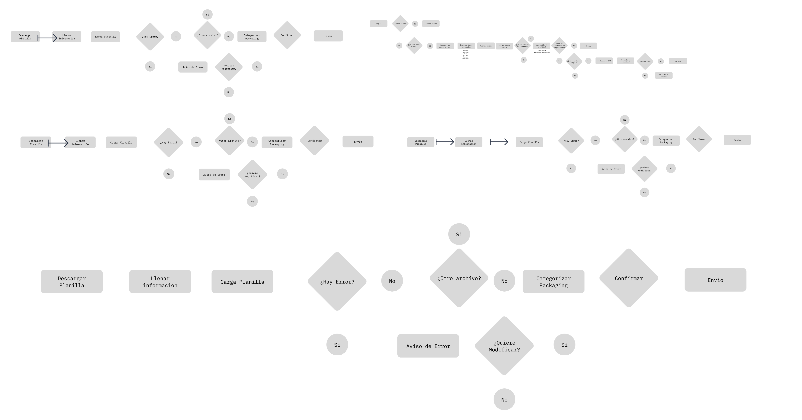

The Lisy
The Lisy es una plataforma web integral de gestión logística diseñada para optimizar y agilizar las operaciones de coordinación de carga entre empresas. A través de una interfaz intuitiva y herramientas especializadas, Lisy simplifica la programación de envíos, proporciona visibilidad en tiempo real sobre el estado de las cargas y mejora la colaboración entre los diferentes actores de la cadena de suministro.
Objetivos
- Facilitar la transferencia de carga entre empresas.
- Crear una interfaz eficiente y fácil de usar.
- Mejorar la gestión de horarios de envío.
Blueprints
Se crearon blueprints para definir la estructura y el flujo general de la plataforma. Los blueprints ayudaron a visualizar y planificar todos los componentes y su interacción dentro del sistema, asegurando una visión integral antes de profundizar en detalles específicos.
Userflow
Se desarrollaron mapas de flujo para representar visualmente cómo los usuarios navegarían por la plataforma. Estos mapas fueron esenciales para identificar posibles puntos de fricción y asegurar que la navegación fuera intuitiva y fluida.

User persona / User Journey
Se crearon user personas basadas en investigaciones y entrevistas con usuarios potenciales. Las user personas ayudaron a enfocar el diseño en las necesidades y comportamientos de los usuarios reales, asegurando que las soluciones diseñadas fueran relevantes y útiles. Se delinearon user journeys para mapear las experiencias de los usuarios a lo largo de su interacción con la plataforma. Esto incluyó desde el primer contacto hasta la finalización de una tarea, identificando puntos clave donde la experiencia del usuario podría mejorarse.
Arquitectura de la información
Se diseñó la arquitectura de la información para organizar el contenido y las funcionalidades de manera lógica y accesible. Este paso fue crucial para asegurar que los usuarios pudieran encontrar fácilmente la información y completar las tareas necesarias sin confusión.
Adaptación de una Librería de Diseño
Se adaptó una librería de diseño existente a la identidad visual de The Lisy. Esta adaptación permitió asegurar consistencia en todos los elementos visuales de la plataforma, alineándolos con la identidad de marca de The Lisy. La librería de diseño proporcionó una base sólida y componentes reutilizables, lo que facilitó el desarrollo eficiente y coherente de la interfaz.
Landing Page
La landing page fue diseñada para captar la atención de los usuarios y proporcionar información clara y concisa sobre los servicios de The Lisy. Utilizando una combinación de imágenes atractivas, textos persuasivos y llamadas a la acción, la landing page está diseñada para convertir visitantes en usuarios registrados.

Diseño de la Aplicación Web
La aplicación web fue diseñada para facilitar la transferencia de carga entre empresas. La interfaz es intuitiva y eficiente, permitiendo a los usuarios agendar horarios, gestionar envíos y monitorear el estado de sus cargas con facilidad. Se implementaron características como notificaciones y recordatorios para mejorar la usabilidad y eficiencia del proceso.